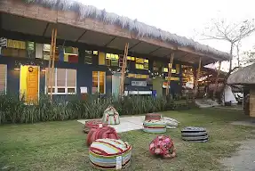
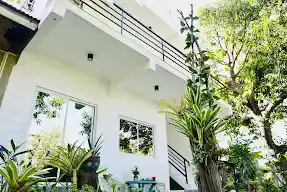
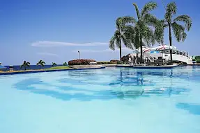

Flotsam & Jetsam Hostel
Flotsam & Jetsam Hostel is a vibrant and artistic beachfront accommodation in San Juan, La Union. Known for its laid-back atmosphere, it's the perfect spot for travelers looking to unwind, meet new people, and experience the surf culture."

Location One Eighty
Location One Eighty offers breathtaking panoramic views of La Union's coastline. This serene getaway combines modern design with nature's beauty, making it ideal for relaxation and inspiration.

Thunderbird Resorts and Casinos Poro Point
Thunderbird Resorts and Casinos Poro Point luxurious Mediterranean-inspired resort in La Union. With stunning sea views, world-class amenities, and a premier casino, it promises an unforgettable getaway.s.